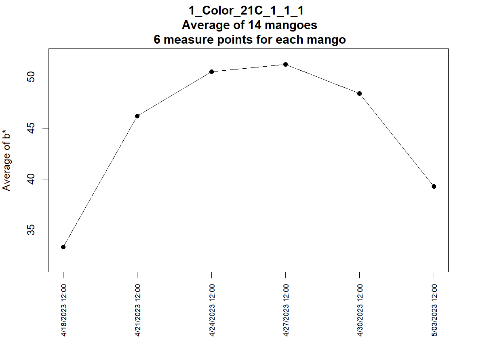
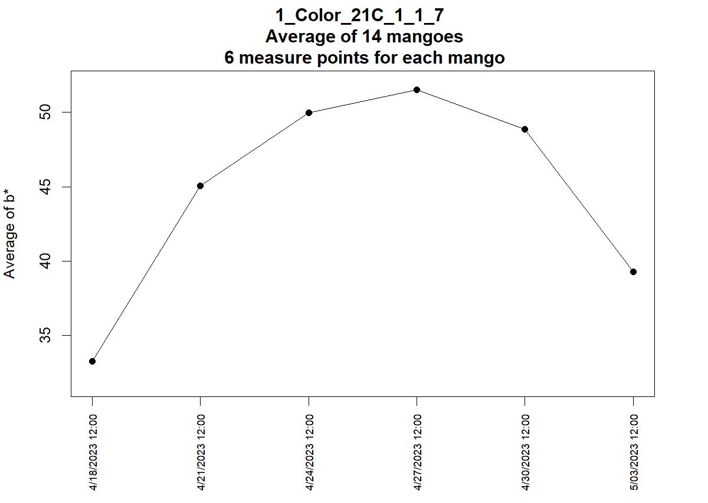
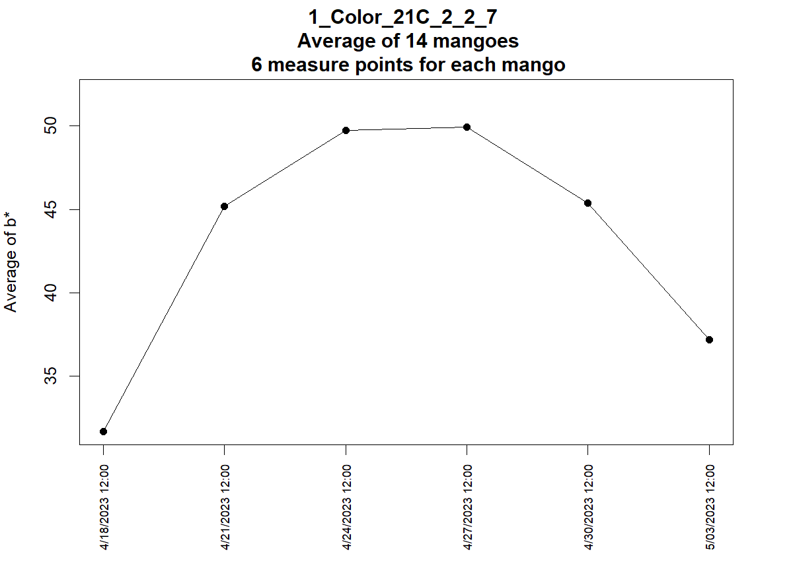
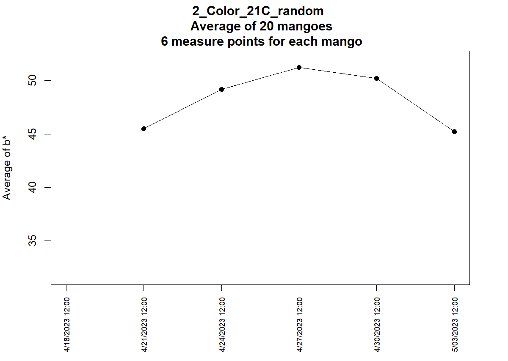
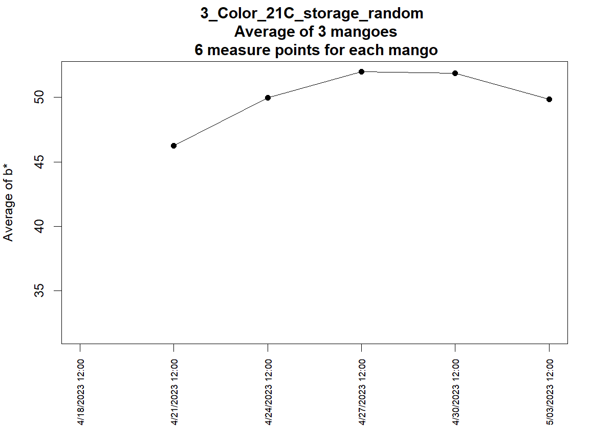
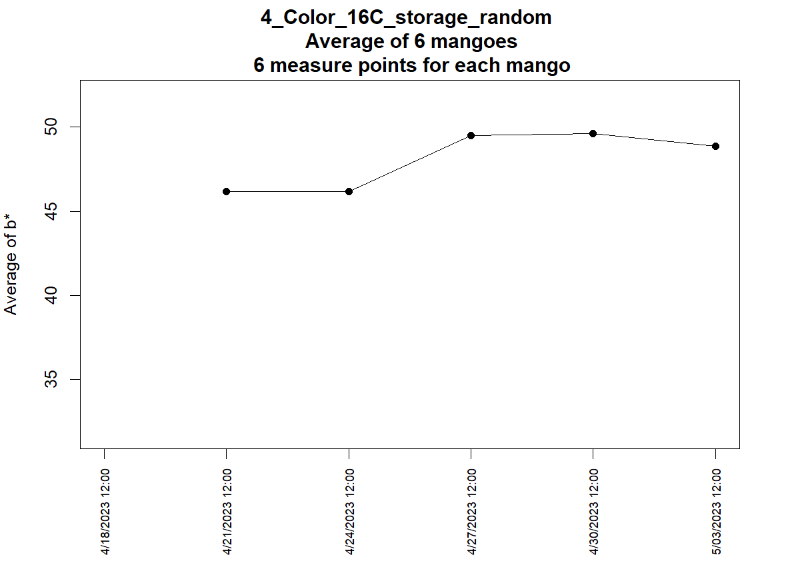

Statistics Report
1_Color_21C_1_1_1.txt
| b* | Mean |
|---|
| b_D0 | 33.33 |
| b_D3 | 46.17 |
| b_D6 | 50.55 |
| b_D9 | 51.25 |
| b_D12 | 48.41 |
| b_D15 | 39.28 |

1_Color_21C_1_1_7.txt
| b* | Mean |
|---|
| b_D0 | 33.25 |
| b_D3 | 45.05 |
| b_D6 | 49.96 |
| b_D9 | 51.53 |
| b_D12 | 48.86 |
| b_D15 | 39.28 |

1_Color_21C_2_2_7.txt
| b* | Mean |
|---|
| b_D0 | 31.66 |
| b_D3 | 45.19 |
| b_D6 | 49.75 |
| b_D9 | 49.94 |
| b_D12 | 45.36 |
| b_D15 | 37.16 |

2_Color_21C_random.txt
| b* | Mean |
|---|
| b_D0 | NaN |
| b_D3 | 45.5 |
| b_D6 | 49.17 |
| b_D9 | 51.25 |
| b_D12 | 50.22 |
| b_D15 | 45.22 |

3_Color_21C_storage_random.txt
| b* | Mean |
|---|
| b_D0 | NaN |
| b_D3 | 46.24 |
| b_D6 | 49.98 |
| b_D9 | 52 |
| b_D12 | 51.9 |
| b_D15 | 49.84 |

4_Color_16C_storage_random.txt
| b* | Mean |
|---|
| b_D0 | NaN |
| b_D3 | 46.16 |
| b_D6 | 46.17 |
| b_D9 | 49.51 |
| b_D12 | 49.63 |
| b_D15 | 48.86 |
